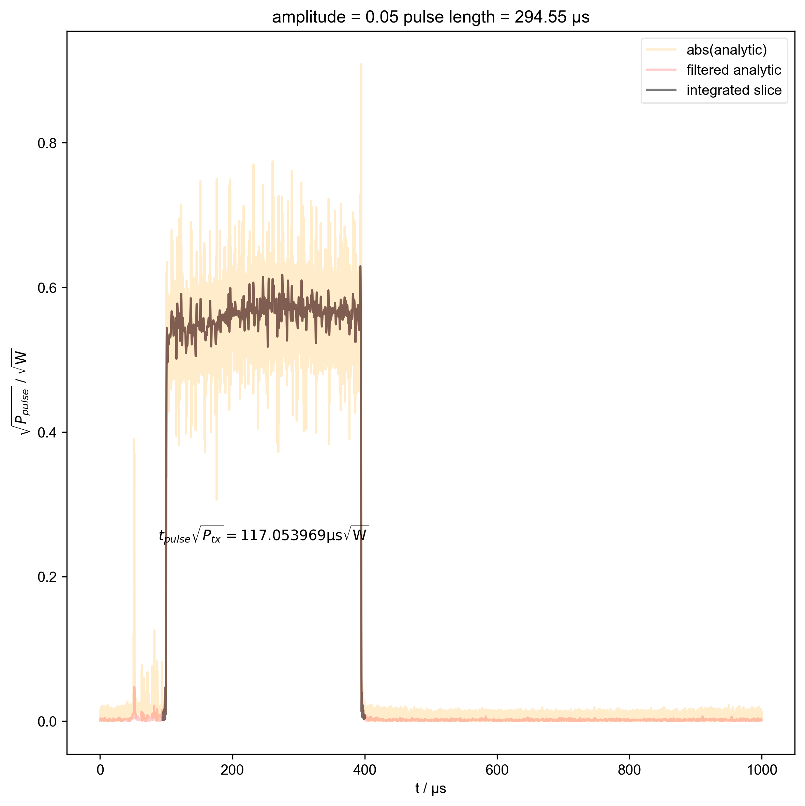
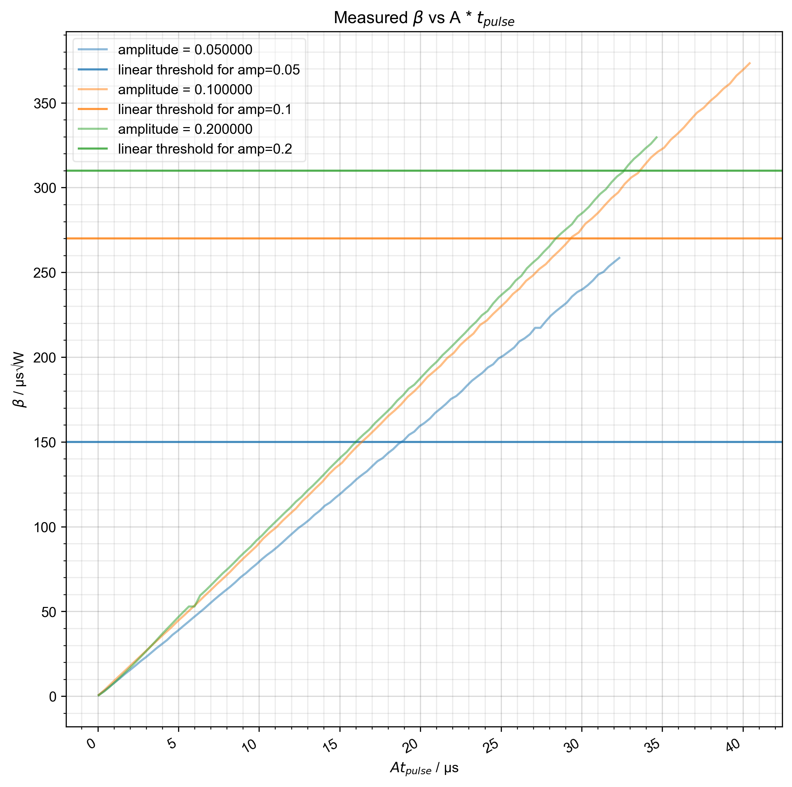
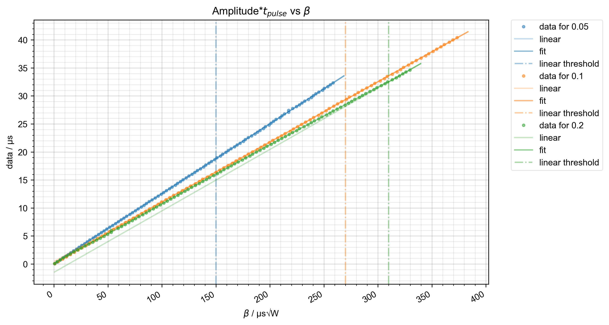
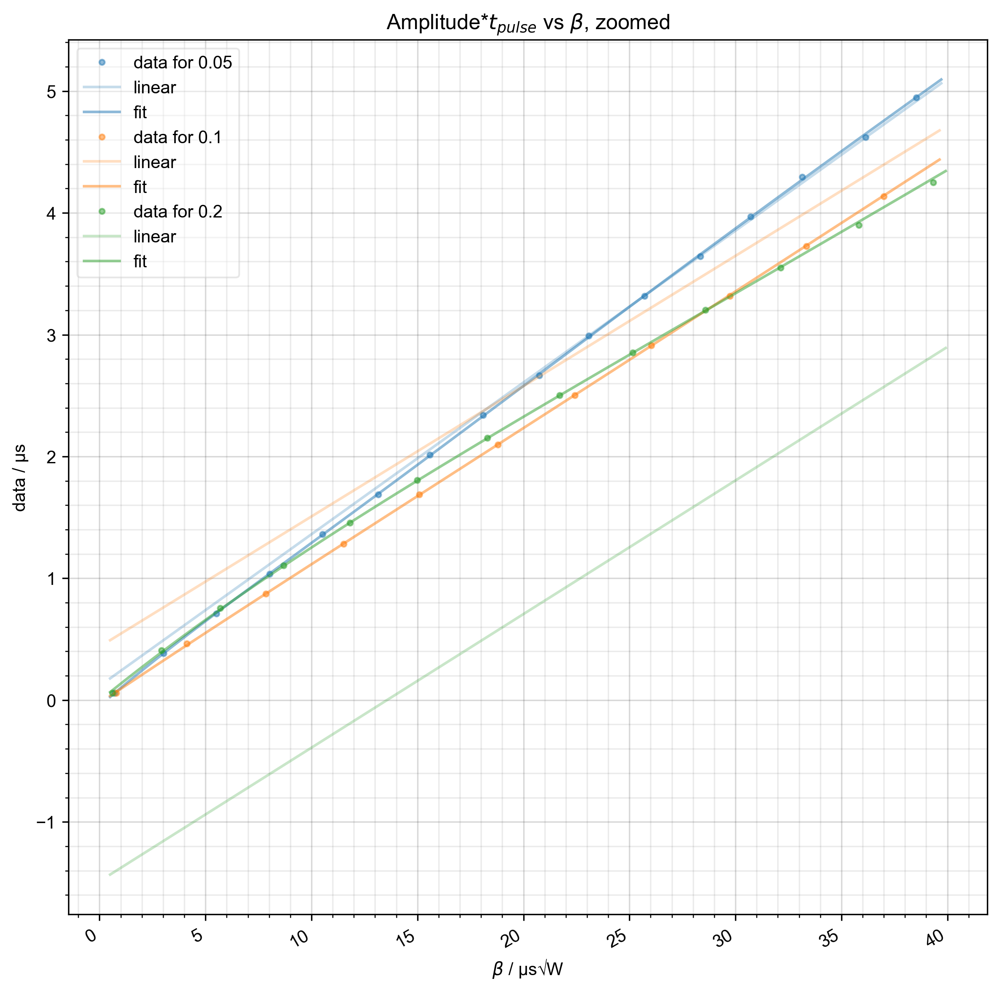
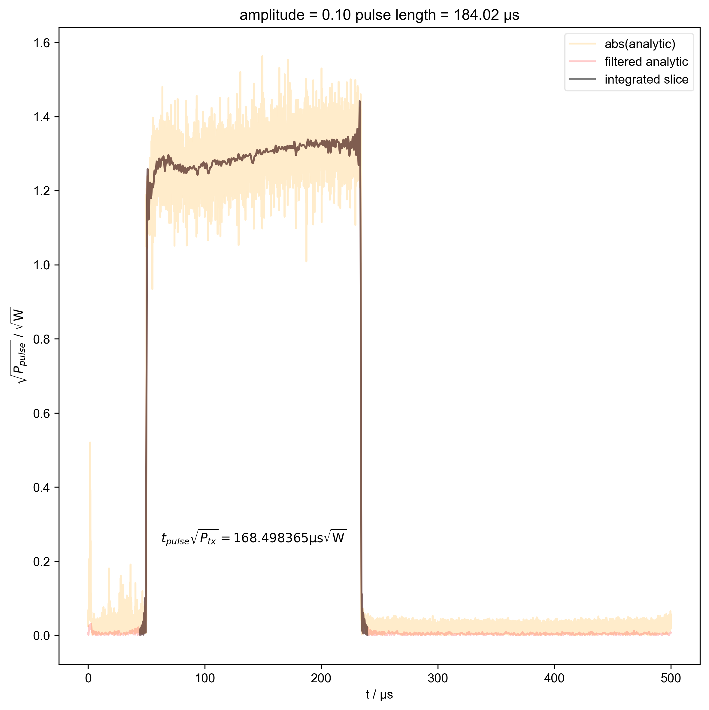
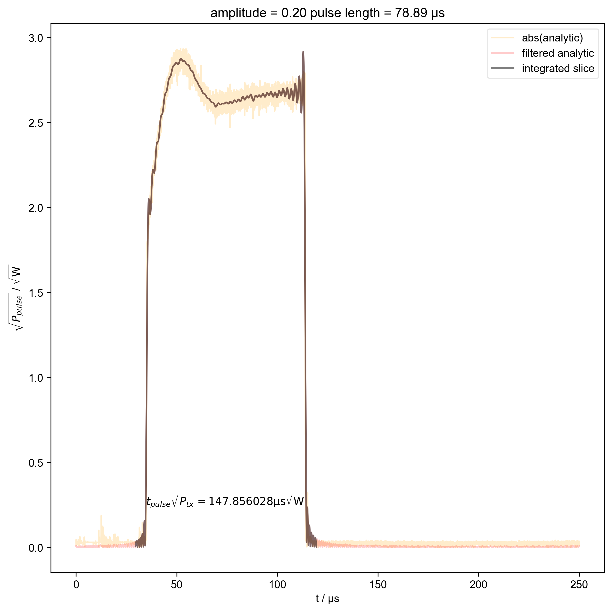
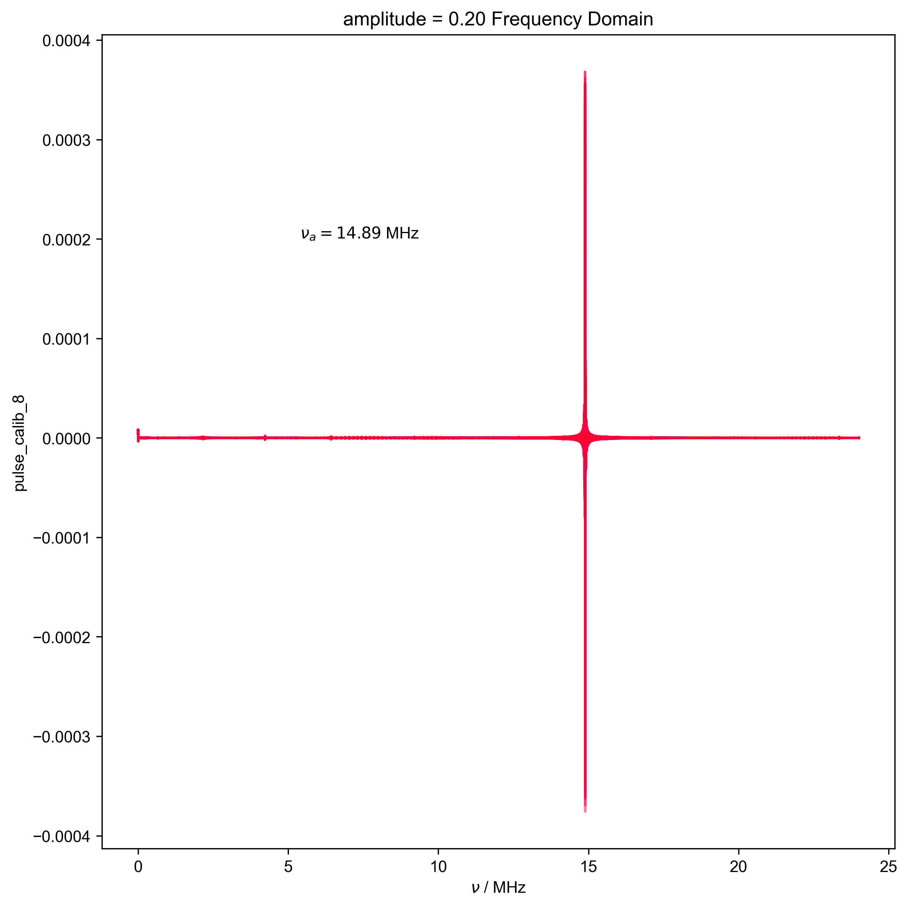

Note
Go to the end to download the full example code
Calculate actual beta as a function of pulse length¶
Assuming the data is a series of pulse lengths captured on the GDS oscilloscope (acquired using FLInst/examples/run_pulse_calibration.py), here each pulse length capture is frequency filtered and the absolute is integrated and converted to yield \(t_{pulse}\sqrt{P_{peak}}\). To convert to rms power this value is divided by \(\sqrt{2}\) to give the final beta where \(\beta = \frac{1}{\sqrt{2}} \int \sqrt{P_{rms}(t)} dt\). From these integrals the programmed pulse length is plotted as a function of the calculated \(\beta\) and a fit is applied returning the fitting coefficients for the nonlinear and linear regime of the data. The user then copies these coefficients into FLInst/spincore_pp/pulse_length_conv.py in the appropriate section to obtain calibrated pulse lengths for the given amplitude.
- 
- 
- 
- 
- 
- 
- 
---------- logging output to /home/jmfranck/pyspecdata.0.log ----------
--> simple_functions.py(126):root find_apparent_anal_freq 2024-10-26 15:51:02,441
INFO: Aliasing occurred, but we can still find that frequency!
/home/jmfranck/base/lib/python3.11/site-packages/matplotlib/cbook.py:1699: ComplexWarning: Casting complex values to real discards the imaginary part
return math.isfinite(val)
/home/jmfranck/base/lib/python3.11/site-packages/matplotlib/cbook.py:1345: ComplexWarning: Casting complex values to real discards the imaginary part
return np.asarray(x, float)
**************** Coefficients for 0.05 ****************
Non-linear regime coefficients:
[ 3.75442878e+02 2.00599762e+06 -8.17658362e+10 -6.14612522e+15
-2.47655751e+20 -5.88569415e+24 -8.65005568e+28 -7.95171001e+32
-4.45091091e+36 -1.38696656e+40 -1.84433605e+43]
Linear regime coefficients:
[2.31318373e+00 2.49223410e+06]
**************** Coefficients for 0.1 ****************
Non-linear regime coefficients:
[ 2.93528215e+02 9.59757416e+05 -1.32947207e+10 -5.17620067e+14
-1.05255134e+19 -1.27041564e+23 -9.58050939e+26 -4.56587780e+30
-1.33800953e+34 -2.20250690e+37 -1.55941251e+40]
Linear regime coefficients:
[4.38010537e+00 1.06971597e+06]
**************** Coefficients for 0.2 ****************
Non-linear regime coefficients:
[ 1.62924179e+02 4.91729568e+05 -1.99215893e+09 -6.38076923e+13
-1.05046642e+18 -1.04830747e+22 -6.88084079e+25 -3.02459439e+29
-8.58707022e+32 -1.41598700e+36 -1.02210088e+39]
Linear regime coefficients:
[-7.43656432e+00 5.48421364e+05]
1: amplitude = 0.05 pulse length = 1.15 μs |||μs
2: amplitude = 0.05 pulse length = 294.55 μs |||μs
3: amplitude = 0.05 pulse length = 587.95 μs |||μs
4: amplitude = 0.05 Frequency Domain |||('MHz', 'μs')
5: collect filtered analytic |||μs
6: Measured $\beta$ vs A * $t_{pulse}$ |||μs
7: Amplitude*$t_{pulse}$ vs $\beta$ |||μs√W
8: Amplitude*$t_{pulse}$ vs $\beta$, zoomed |||μs√W
9: amplitude = 0.10 pulse length = 0.58 μs |||μs
10: amplitude = 0.10 pulse length = 184.02 μs |||μs
11: amplitude = 0.10 pulse length = 367.46 μs |||μs
12: amplitude = 0.10 Frequency Domain |||('MHz', 'μs')
13: amplitude = 0.20 pulse length = 0.29 μs |||μs
14: amplitude = 0.20 pulse length = 78.89 μs |||μs
15: amplitude = 0.20 pulse length = 157.49 μs |||μs
16: amplitude = 0.20 Frequency Domain |||('MHz', 'μs')
import pyspecdata as psd
from pyspecProcScripts import find_apparent_anal_freq
import matplotlib.pyplot as plt
import numpy as np
import logging
psd.init_logging()
V_atten_ratio = 102.2 # attenutation ratio
skip_plots = 45 # diagnostic -- set this to None, and there will be no
# diagnostic plots
HH_width = 1e6
typical_180 = 40e-6 # typical beta for a 180 -- it's really important to
# get pulses in this regime correct
# Note: the linear threshold seems to vary from one amplitude to the next
with psd.figlist_var() as fl:
for filename, nodename, linear_threshold in [
(
"240819_test_amp0p05_calib_pulse_calib.h5",
"pulse_calib_3",
150e-6,
),
(
"240819_amp0p1_calib_pulse_calib.h5",
"pulse_calib_1",
270e-6,
),
(
"240819_amp0p2_calib_repeat_pulse_calib.h5",
"pulse_calib_8",
310e-6,
),
]:
d = psd.find_file(
filename, expno=nodename, exp_type="ODNP_NMR_comp/test_equipment"
)
assert (
d.get_prop("postproc_type") == "GDS_capture_v1"
), "The wrong postproc_type was set so you most likely used the wrong script for acquisition"
amplitude = d.get_prop("acq_params")["amplitude"]
fl.basename = f"amplitude = {amplitude:.2f}"
# {{{ ensure units are set
if d.get_units("t") is None:
logging.info(
"Units for your t axis weren't set to anything so I am setting them to s"
)
d.set_units("t", "s")
if d.get_units("t_pulse") is None:
logging.info(
"Units for your t_pulse axis weren't set to anything so I am setting them to s"
)
d.set_units("t_pulse", "s")
# }}}
d *= V_atten_ratio
d /= np.sqrt(50) # V/sqrt(R) = sqrt(P_amp)
# {{{ functions that streamline plotting the desired pulse length
# datasets
def switch_to_plot(d, j):
thislen = d["t_pulse"][j] / 1e-6
fl.next(f"pulse length = {thislen:.2f} μs")
def indiv_plots(d, thislabel, thiscolor):
if skip_plots is None:
return
for j in range(len(d["t_pulse"])):
if j % skip_plots == 0:
switch_to_plot(d, j)
fl.plot(
d["t_pulse", j],
alpha=0.2,
color=thiscolor,
label=thislabel,
)
plt.ylabel(r"$\sqrt{P}$ / $\sqrt{\mathrm{W}}$")
# }}}
# {{{ data is already analytic, and downsampled to below 24 MHz
indiv_plots(abs(d), "abs(analytic)", "orange")
d, nu_a, _ = find_apparent_anal_freq(d) # find frequency of signal
d.ft("t")
# {{{ Diagnostic to ensure the frequency properly identified
fl.next("Frequency Domain")
fl.plot(d)
plt.text(
x=0.25,
y=0.75,
s=rf"$\nu_a={nu_a/1e6:0.2f}$ MHz",
transform=plt.gca().transAxes,
)
assert (0 > nu_a + 0.5 * HH_width) or (
0 < nu_a - 0.5 * HH_width
), "unfortunately the region I want to filter includes DC -- this is probably not good, and you should pick a different timescale for your scope so this doesn't happen"
# }}}
# {{{ apply HH frequency filter
d["t" : (0, nu_a - 0.5 * HH_width)] *= 0
d["t" : (nu_a + 0.5 * HH_width, None)] *= 0
# }}}
d.ift("t")
indiv_plots(abs(d), "filtered analytic", "red")
# }}}
# {{{ set up shape of data to drop the calculated beta values into
beta_v_t = d.shape.pop("t").alloc(dtype=np.float64)
beta_v_t.copy_axes(d).set_units(r"s√W")
# }}}
for j in range(len(d["t_pulse"])):
s = d["t_pulse", j]
int_range = abs(s).contiguous(lambda x: x > 0.05 * s.max())[0]
# slightly expand int range to include rising edges
int_range[0] -= 5e-6
int_range[-1] += 5e-6
# {{{ plot the integration range of all pulses prior to integrating.
# Serves as diagnostic to ensure the beta is consistently
# increasing.
fl.push_marker()
fl.basename = None
fl.next("collect filtered analytic")
fl.plot(abs(s["t":int_range]), alpha=0.3)
fl.pop_marker()
# }}}
beta_v_t["t_pulse", j] = abs(s["t":int_range]).integrate(
"t"
).data.item() / np.sqrt(
2
) # t * sqrt(P_rms)
# {{{ Can't use indiv_plots because we've already indexed the t_pulse
# out and we also want to plot the calculated beta on top
if skip_plots is not None and j % skip_plots == 0:
switch_to_plot(d, j)
fl.plot(
abs(s["t":int_range]),
color="black",
label="integrated slice",
)
plt.ylabel(r"$\sqrt{P_{pulse}}$ / $\sqrt{\mathrm{W}}$")
plt.text(
np.mean(int_range) / 1e-6,
0.25,
r"$t_{pulse} \sqrt{P_{tx}} = %f \mathrm{μs} \sqrt{\mathrm{W}}$"
% (beta_v_t["t_pulse", j].item() / 1e-6),
ha="center",
)
# }}}
# {{{ show what we observe -- how does β vary with the programmed pulse length
fl.basename = None # reset so all amplitudes are on same plots
beta_v_t.set_plot_color_next() # cycle color list to next color
thiscolor = beta_v_t.get_plot_color() # set thiscolor to the above
fl.next(r"Measured $\beta$ vs A * $t_{pulse}$")
beta_v_t.rename("t_pulse", "$A t_{pulse}$").name(r"$\beta$").set_units(
"μs√W"
)
beta_v_t[
"$A t_{pulse}$"
] *= amplitude # we only t_pulse to be multiplied by amplitude for plotting purposes only!
fl.plot(
(beta_v_t / 1e-6),
color=thiscolor,
label="amplitude = %f" % amplitude,
)
plt.axhline( # the linear threshold is the threshold above which beta is linear
y=linear_threshold / 1e-6,
color=thiscolor,
alpha=0.8,
label=f"linear threshold for amp={amplitude}",
)
psd.gridandtick(plt.gca())
beta_v_t[
"$A t_{pulse}$"
] /= amplitude # need to divide back out for the determination of the coefficients below
beta_v_t.rename("$A t_{pulse}$", "t_pulse")
# }}}
# {{{ Identify captures that don't increase in beta - don't use
decreasing_idx = np.nonzero(~(np.diff(beta_v_t.data) > 0))[0]
if (
len(decreasing_idx) > 0
): # beta doesn't always increase with increasing pulse length
fl.plot(
beta_v_t["t_pulse", : decreasing_idx[-1] + 1],
"x",
color="r",
label="can't use these",
)
# throw out betas following a faulty pulse
beta_v_t = beta_v_t["t_pulse", decreasing_idx[-1] + 1 :]
# }}}
# {{{ flip data so beta is on x axis now and t_pulse is the y axis
t_v_beta = (
beta_v_t.shape.alloc(dtype=np.float64)
.rename("t_pulse", r"$\beta$")
.setaxis(r"$\beta$", beta_v_t.data)
)
t_v_beta.data[:] = (
beta_v_t["t_pulse"].copy() / 1e-6
) # because our ppg wants μs
t_v_beta.set_units("μs").set_units(r"$\beta$", "s√W")
# use as temp for ultimate coeff
# }}}
# {{{ Determine linear and nonliear coefficients
c_nonlinear = t_v_beta[
r"$\beta$":(None, linear_threshold)
].C # make copy to allow the next
# line not to cause the data to actually shift
c_nonlinear[
r"$\beta$"
] -= linear_threshold # Taylor expand around the linear threshold rather than 0
c_nonlinear = c_nonlinear.polyfit(r"$\beta$", order=10)
c_linear = t_v_beta[r"$\beta$":(linear_threshold, None)].polyfit(
r"$\beta$", order=1
)
print(
f"\n**************** Coefficients for {amplitude} ****************\n"
)
print("Non-linear regime coefficients:\n", c_nonlinear)
print("Linear regime coefficients:\n", c_linear)
# }}}
def prog_plen(desired):
"""If the desired beta is above the linear threshold,
the linear fit is applied to return the pulse length
required to obtain the desired beta.
If the desired beta is below the linear threshold, the
nonlinear fit is applied to return the pulse length
required to obtain the desired beta.
If a series of desired betas is fed, both fits are
applied appropriately to return the pulse lengths
required to obtain each desired beta in the series.
"""
def zonefit(desired):
if desired > linear_threshold:
return np.polyval(c_linear[::-1], desired)
else:
return np.polyval(
c_nonlinear[::-1], desired - linear_threshold
)
ret_val = np.vectorize(zonefit)(desired)
if ret_val.size > 1:
return ret_val
else:
return ret_val.item()
fl.next(r"Amplitude*$t_{pulse}$ vs $\beta$", legend=True)
t_v_beta.name("A * $t_{pulse}$").set_units("μs")
fl.plot(
t_v_beta * amplitude,
".",
alpha=0.5,
color=thiscolor,
label=f"data for {amplitude}",
)
fl.next(r"Amplitude*$t_{pulse}$ vs $\beta$, zoomed")
fl.plot(
t_v_beta[r"$\beta$":(None, typical_180)] * amplitude,
".",
alpha=0.5,
color=thiscolor,
label=f"data for {amplitude}",
)
# {{{ we extrapolate past the edges of the data using the linear threshold
# to show how the linear is poorly behaved for smaller beta values
for_extrap = (
psd.nddata(
np.linspace(0.5e-6, t_v_beta[r"$\beta$"].max() + 10e-6, 500),
r"$\beta$",
)
.set_units("μs")
.set_units(r"$\beta$", "s√W")
)
fl.plot(
for_extrap.eval_poly(c_linear, r"$\beta$")[
r"$\beta$":(None, typical_180)
]
* amplitude,
"--",
alpha=0.25,
color=thiscolor,
label="linear",
)
fl.next(r"Amplitude*$t_{pulse}$ vs $\beta$")
fl.plot(
for_extrap.eval_poly(c_linear, r"$\beta$") * amplitude,
"--",
alpha=0.25,
color=thiscolor,
label="linear",
)
# }}}
full_fit = for_extrap.fromaxis(r"$\beta$").run(prog_plen)
fl.plot(full_fit * amplitude, alpha=0.5, color=thiscolor, label="fit")
plt.axvline(
x=linear_threshold / 1e-6, # units of μs
alpha=0.4,
color=thiscolor,
ls="dashdot",
label="linear threshold",
)
fl.next(r"Amplitude*$t_{pulse}$ vs $\beta$, zoomed")
fl.plot(
full_fit[r"$\beta$":(None, typical_180)] * amplitude,
alpha=0.5,
color=thiscolor,
label="fit",
)
# {{{ Add grids to the fit plots
for j in (
r"Amplitude*$t_{pulse}$ vs $\beta$",
r"Amplitude*$t_{pulse}$ vs $\beta$, zoomed",
):
fl.next(j)
psd.gridandtick(plt.gca())
# }}}
Total running time of the script: (0 minutes 44.446 seconds)